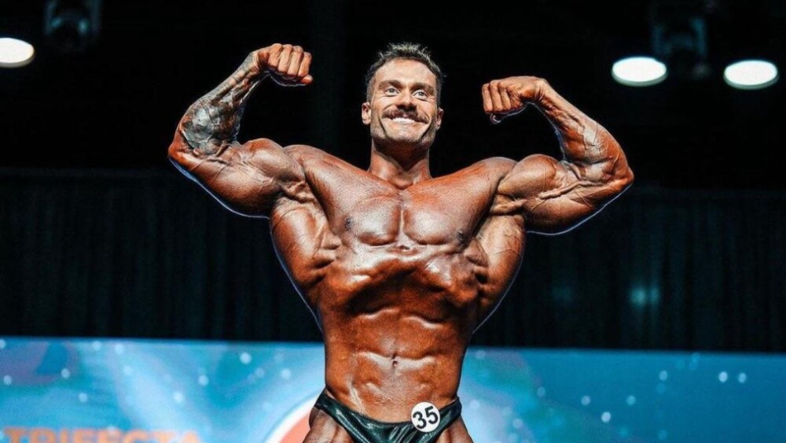

Treino
Treino: 5 estratégias para progresso consistente
Introdução
Uma abordagem consistente e progressiva é a chave para ganhos reais. Este post resume 5 estratégias aplicáveis a qualquer nível.
Principais pontos
- Periodização simples: alterne blocos de força, volume e recuperação a cada 4–8 semanas.
- Progressão de carga: registre séries e repetições; aumente carga ou repetições gradualmente.
- Técnica primeiro: priorize execução correta para prevenir lesões e otimizar ganhos.
- Recuperação ativa: sono de qualidade e dias leves são tão importantes quanto treino.
- Variabilidade inteligente: mude exercícios, amplitudes e velocidades para evitar platôs.
Exemplo prático
Semana A: 3x por semana (força) — 4–6 rep / 3–5 sets.
Semana B: 3x por semana (hipertrofia) — 8–12 rep / 3–4 sets.
Conclusão
Consistência + progressão + recuperação formam a base. Ajuste conforme resposta individual e objetivo.